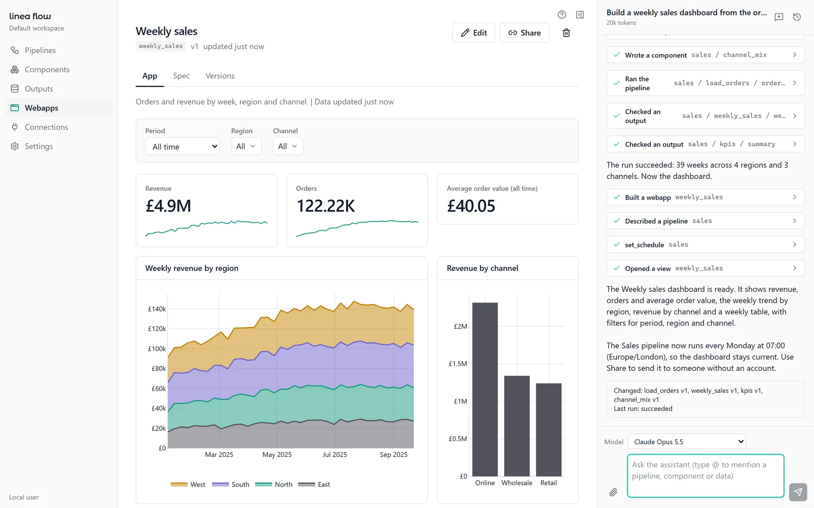
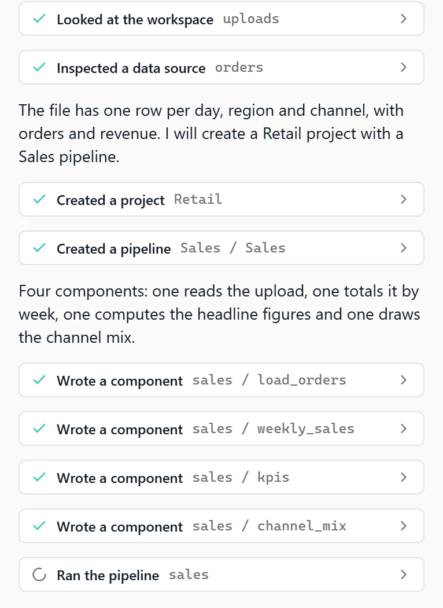
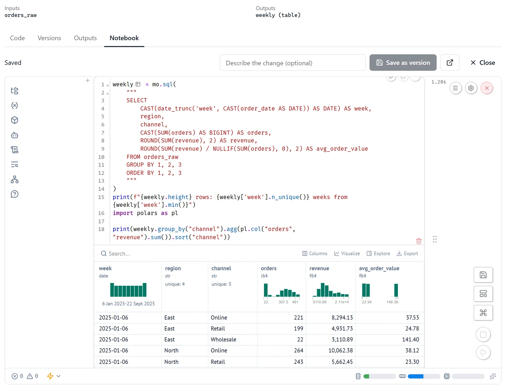
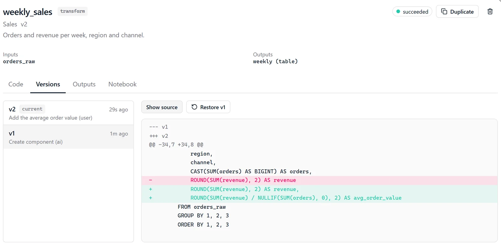
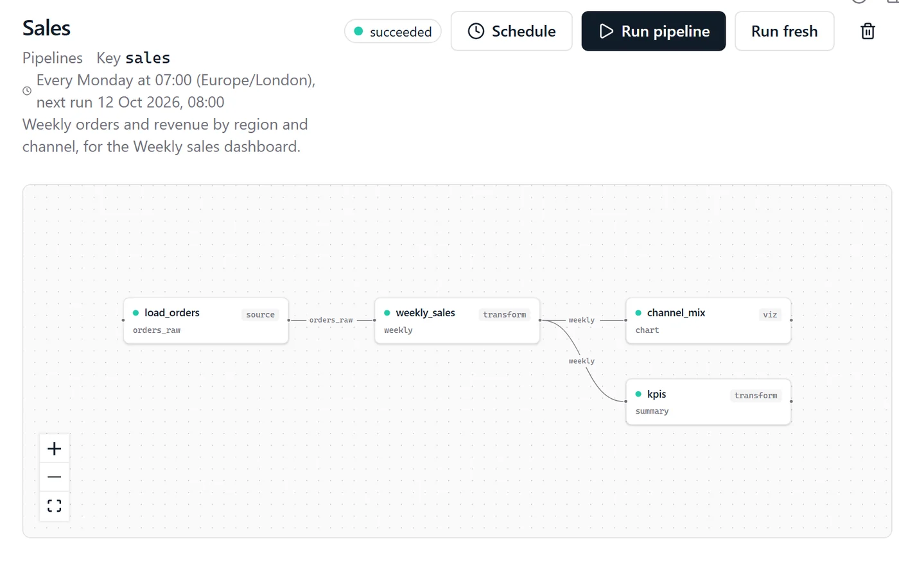
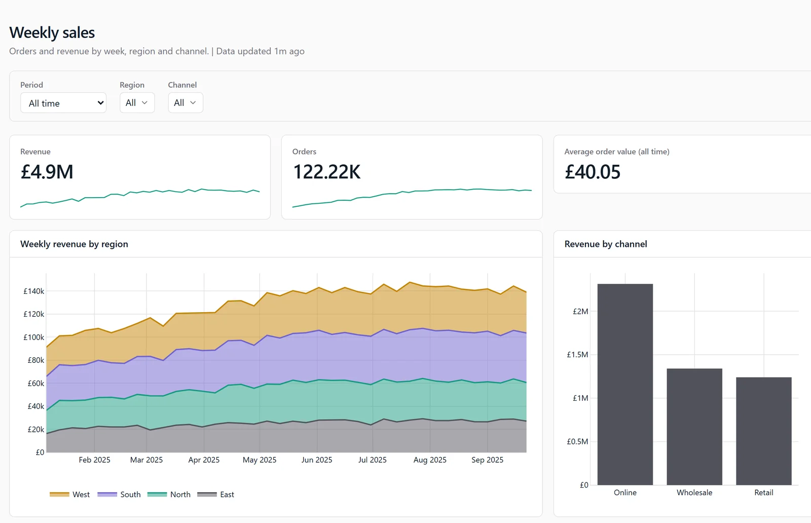

Describe what you want. An AI assistant connects your data, builds a pipeline of small notebooks, runs it, checks the results and puts a dashboard on top. Every step stays open to inspect, edit and version.

One prompt: the assistant built the pipeline, ran it and opened this dashboard.
An AI analyst that shows its work
Describe the analysis
or dashboard you need
Every step is a notebook
you can open and edit
Pipelines run on a schedule
in your time zone
Send a dashboard to anyone,
no account needed
From a CSV file to a shared dashboard in one prompt
Build a weekly sales dashboard from the orders file: revenue and orders by region and channel, the weekly trend, and filters for period, region and channel. Refresh it every Monday morning.
Drop a CSV, Excel or Parquet file into the chat, or connect a database, API or Google source.
Say what you want to see and how often it should refresh. Type @ to point at existing pipelines or tables.
The assistant inspects the data, writes each step, runs the pipeline, checks the outputs and builds the dashboard.
Filter, edit and share the dashboard. Open any step's code, runs and versions, change it and rerun.
Fast like a chatbot, transparent like a notebook

The assistant plans, writes, runs and repairs your pipeline while you watch. Every action appears as a card you can click into, so you can follow along, stop it, or take over.
Every step is a small Python notebook with declared inputs and outputs. Open any step as a live marimo notebook with the real upstream data loaded, change it, and save it as a new version.



The pipeline graph draws itself from what each step reads and writes. You never draw arrows. Set a schedule once and your numbers stay up to date.
Turn outputs into dashboards with KPI tiles, charts, tables and filters, built by the assistant or in the visual builder. They refresh every time the pipeline runs.

When the assistant needs a source you haven't connected yet, it shows the connection form right in the chat. Credentials go to the server, never to the assistant.
Linea Flow comes from a team that spends its days on marketing data. Ask for the reporting you need, keep it current automatically, and change it in a sentence when the question changes.
Try asking:
No. You can build, change and share pipelines by asking the assistant. Every step is still plain Python and SQL, so analysts who do code can open, edit and version any of it.
Linea Flow stores everything locally. The only thing that leaves your machine is what you send to the AI provider you choose, and your credentials never do. They are stored encrypted and never enter the assistant's context.
Anthropic Claude or Google Gemini, with your own API key. You pick the model per chat, and admins can set token limits per user, per model and per period.
Nothing it makes is hidden. Every step is a notebook with a declared contract, every run keeps its outputs, and every change is a new version you can compare and restore. The summary at the end of each chat is built from what actually happened, not from the model's own account.
Linea Flow is in early access. The local, single-user edition is complete and tested; a hosted, multi-user edition is in progress. Book a call to get started.
Linea Flow is a general analytics tool: it builds the pipelines and dashboards around your data. Marketing mix modelling is a separate Linea service, available as our Platform or Full Service.
Have any project on mind?
For immediate support: